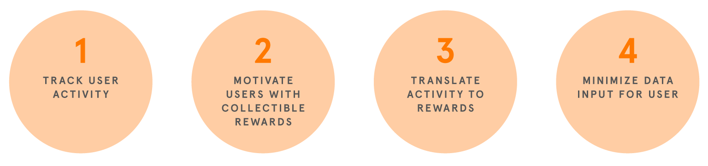
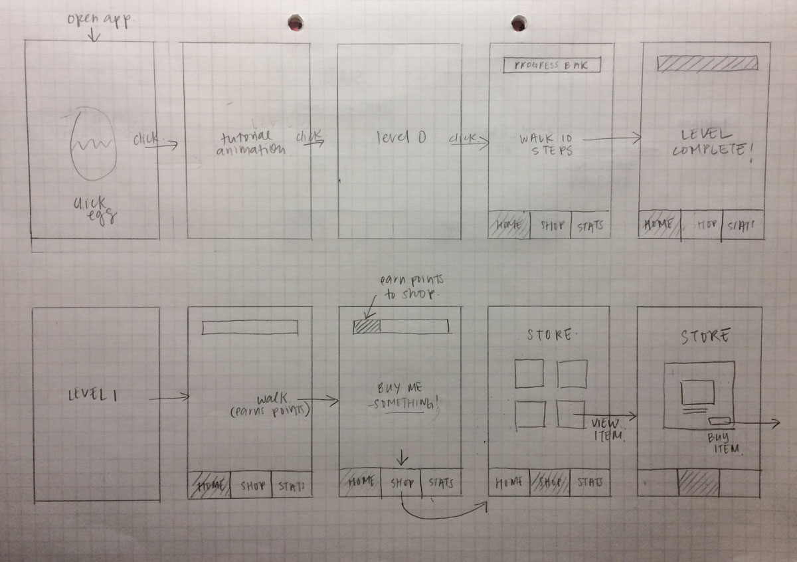

My Gudetama
Team
Morning Kao (PM), Victoria Horng (Visual Design)
Role
UX, UI
Process
2 days to interview, user flow, wireframe, hi-fi prototype
Design Challenge
How might we use a virtual pet to improve a user's health habits?
User Interview Key Findings
To begin exploring the problem space, we conducted a semi-structured interview with two participants and asked about their health habits and their usage of any health related apps.
exercise vs. diets
Users like to keep track of physical activities but generally do not record diets.
lax about diets
The average user without special health needs does not record meal data because they don't need to and don't care to make the effort.
no manual input
Users prefer apps that can automatically record physical activity without user input, such as typing in information.
What should we track?
One of the hardest challenges was coming up with a system that could translate a user's daily activity into quantitative rewards. For example, recording meals would be difficult to objectively quantify. How can we measure meal quantity without depending on manual input? A user's actions need to be automatically recorded and turned into rewards with a quantitative scale.
How can we influence user behavior?
Another challenge was influencing a user's behavior. Instead of just being able to feed your pet, we had to continuously offer new value so that users get hooked into repeatedly using the app. We looked at apps like Pokemon Go, and Neko Atsume, which motivate users by providing new things to collect. We aimed to create an experience that excites users into collecting items for your pet.
Goals
Solution
Using our research, we brianstormed ideas and talked through the challenges and solutions of our ideas, eventually narrowing down to a walking app that motivates you through collecting goodies for a virtual Gudetama character.
Walking App
We focused on physical activity because users don't record diets and it is easier to track and quantify. Walking allows the user to accomplish the goal passively without disrupting their day, and eliminates the need to manually input data.
Coin System
A coin system makes sure that steps can be converted using a consistent scale. Coins can be used to buy goodies for your pet. Earning virtual currency to buy your own goodies can be a strong motivator.
Gudetama Collectibles
Gudetama is a popular character among young adults and adds humor and personality. Users will be motivated to collect goodies to see Gudetama interact with rewards ranging from basic to luxurious.
Wireframe
When you open My Gudetama, you are greeted by the lazy egg, who shows you a tutorial.
Walk 10 steps to complete the tutorial.
After the tutorial, begin level 1 and start walking. Once you have enough coins, you can buy a bacon for your Gudetama.
What I learned
I gained new understanding of what specific motivations and desires could change behavior. I also learned how to analyze and translate user behavior and data into quantitative systems for the functions of an app.
Further Development
Further work on this app would require a better management system for users to own and use these goodies.